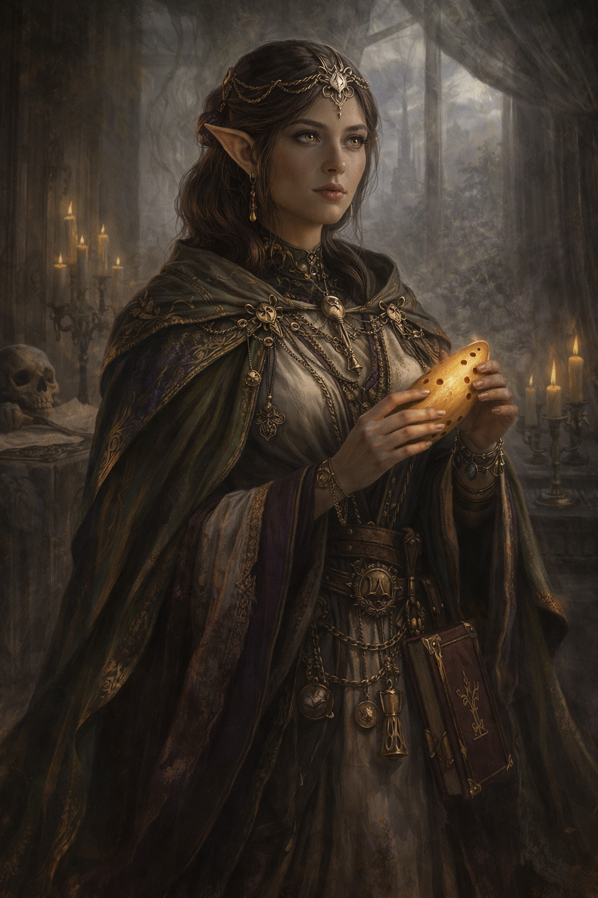

Nikila Vornová

Nikila Vornová byla pečovatelka a žena spojená s chrámovým prostředím. Pomáhala nemocným a zraněným a byla známá svou trpělivostí a klidnou povahou.
Lidé, kteří ji znali, ji popisovali jako někoho, kdo dokázal uklidnit i velmi napjaté situace. Často pracovala v lazaretech a chrámech, kde pomáhala těm, kteří potřebovali péči.
Její smrt otřásla mnoha lidmi ve městě. Okolnosti jejího úmrtí vyvolaly mnoho otázek a dodnes se o nich mezi lidmi šeptá.